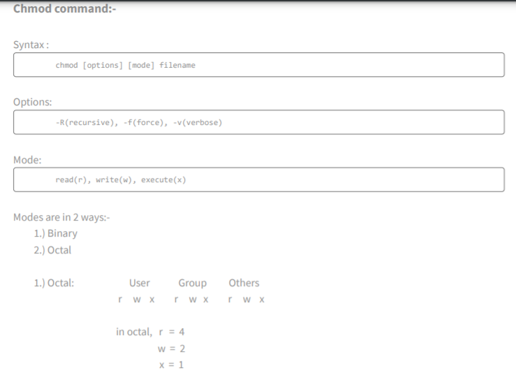
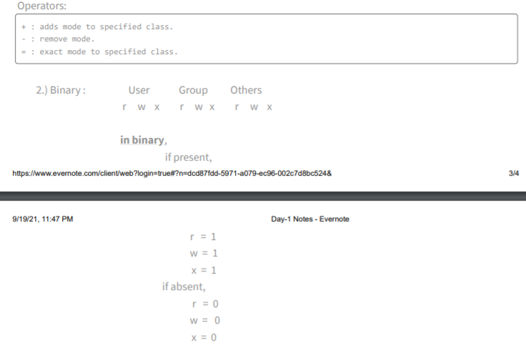

LABORATORY-1
BASIC COMMANDS OF LINUX
pwd: pwd stands for print working directory. It will display the current directory in which you are working.
cd: cd stands for change directory. It will change your directory from that place of that folder or any other place.
cd ..: It will return back to its root from where that particular file/directory is opened.
ls: List command. It will display all the list of files and directories present in that directory(from where I want to find).
ls -l: Long List files command. It shows file or directory, size, modified date and time, file or folder and owner of the file and its permission.
touch: It will make empty files.
cat > filename.txt: This will create a txt file in which you can write some lines and to save it you have to press CTRL+Z.(The spaces should be like this as given)
cat filename.txt: It will display all of our content written in that txt file.
mkdir: It will make a new directory.
rmdir(or rd): It will remove an empty directory.
cp [old_filename] [new_filename]: This command will make a copy of a file into a new file.
paste -d '\n' [file1] [file2] > [file3]: This command will help to combine both file1 and file2 into file3. It means file1 and file2 will combine to file3
cat [file1] [file2] > [file3]: This command will help to combine both file1 and file2 into file3. It means file1 and file2 will combine to file3.
rm [filename]: This command will delete the files in any directory.
mv [file_name] [file/directory_name]: This command will help to rename the file. {file/directory} is the name in which thr filename1 will move from one place to another, i.e. from one directory to another directory or from one file to any other file.
date: This command will display everything date, time, place and everything related to time.
date +%m-%d-%Y: This command will display the date in dd/mm/yy.
who: This command will let you display the users currently logged in to your OS.
clear: This command that is used to clear the terminal screen.
bc: This command is an interactive process that provides arbitrary-precision arithmetic.
cal: This is used to see the calender of a specific month or a whole year.
passwd: This command is used to change the user account passwords.
tree: It returns the durectory paths and files in sub-directory and a summary of a total number of sub-directories and files.
ps: It enables to check status of active processes on a system. [ps = process status].
free: It displays the total amount of free space available in the memory.
chmod:

